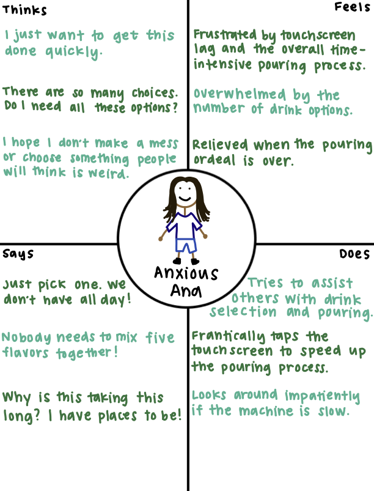

Illustrating Coca-Cola® Freestyle user needs and experiences based on empirical observation
1
RECREATION OF COCA-COLA® FREESTYLE

The Coca-Cola® Freestyle is a touch screen soda fountain which enables users to dispense ice cubes and Coca-Cola drink products, allowing users to pour and mix a variety of drinks with ease. Users can access the features of this interface via touch or a mobile device.
2
OBSERVING USER EXPERIENCES
Key Observations
All observed users instinctively reached for the touchscreen without hesitation and did not use a mobile device for drink selection.
Users who hesitated the most seemed to struggle with selecting a drink category or using the touchscreen, with some tapping multiple times before the screen registered their input.
Users seemed to understand where to place their cup and which areas of the touchscreen to tap, although some exhibited hesitation when deciding whether to tap the button once or press the button and hold.
User Interview Responses
1. Why did you use the Coca-Cola® Freestyle? Did the Coca-Cola® Freestyle meet your expectations?
Users primarily used the machine for customization and variety. Most said it met their expectations, though one mentioned the interface was slightly confusing at first.
2. Have you used the Coca-Cola® Freestyle before?
All three of the interviewed users had used this interface at least once before and identified themselves as 'familiar' with how to use it.
3. How do you find the Coca-Cola® Freestyle to use?
All users found it intuitive, but two noted that the touchscreen was only ocasionally responsive. One user noted that the categories available were lacking as well as that their drink of choice was disabled on the menu.
4. What stands out to you about the Coca-Cola® Freestyle compared to other means of pouring a drink?
Users highlighted the number of options, recognizing that other soda machines they had encountered had either less or more drinks. One user noted that the ice cubes did not always dispense.
5. How do you feel about those differences? Do they add to or take away from your experience?
Users felt the number of options enhanced their experience when the options were not disabled. One user mentioned that the inability to dispense ice could be frustrating. Another user noted that, while the variety was fun, it could be overwhelming at times.
3
USER PERSONAS

This persona is a time-conscious student overwhelmed by the number
of choices offered by the Coca-Cola® Freestyle.